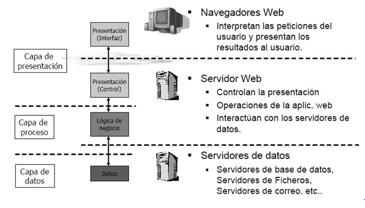
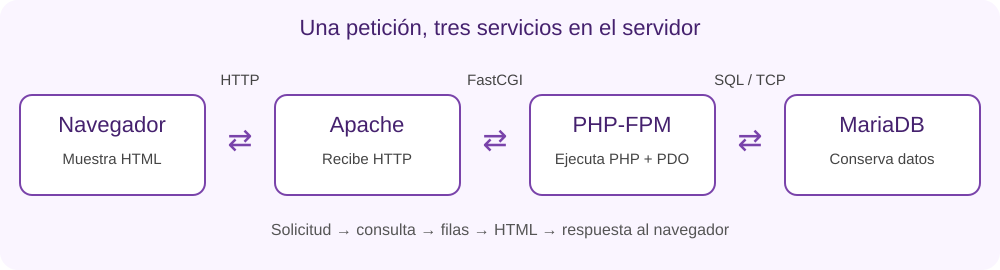

Código
Define el comportamiento: validar una operación, calcular un importe o presentar una lista.
AEA2 · Capa de datos
Cómo conserva la información una aplicación web y cómo accede a ella desde el servidor.
Una aplicación maneja información que cambia: productos, pedidos, usuarios, reservas o resultados. Si esos datos están escritos dentro del programa, cada cambio obliga a editar y desplegar código. Separar código y datos permite actualizar la información sin reprogramar la aplicación.
Define el comportamiento: validar una operación, calcular un importe o presentar una lista.
Describen el estado actual: precios, existencias, reservas o resultados registrados.
Persistencia significa conservar información más allá de una petición o de la ejecución de un proceso. Un array en memoria desaparece al terminar ese proceso; un archivo guardado puede persistir. Una base de datos añade mecanismos para consultar, relacionar y actualizar información de forma controlada.
No toda web necesita una base de datos. Una página informativa puede funcionar con archivos estáticos. La necesidad aparece cuando el volumen, las relaciones y las operaciones sobre la información lo justifican.
Idea clave
Los datos deben conservarse aunque termine la petición o reiniciemos los procesos de la aplicación. Esa persistencia no sustituye las copias de seguridad: un dato persistente también puede borrarse por error.
Una aplicación web necesita mostrar información, procesar acciones y conservar datos. La arquitectura de tres capas organiza estas responsabilidades en presentación, negocio y persistencia. Al añadir una base de datos estamos incorporando la persistencia y conectándola con el resto de la aplicación.

Para organizar el código podemos utilizar MVC (Modelo–Vista–Controlador): la vista presenta la información, el controlador recibe las acciones y coordina la respuesta, y el modelo representa los datos y las reglas del dominio, utilizando los componentes de acceso a la base de datos.
| Responsabilidad / capa | Cómo interviene MVC | Ejemplo: realizar una reserva |
|---|---|---|
| Presentación Mostrar información y recoger acciones. | La vista muestra el formulario y el resultado; el controlador recibe la acción enviada por el usuario. | El usuario elige una fecha y unas plazas y pulsa «Reservar». |
| Negocio o aplicación Coordinar la operación y aplicar sus reglas. | El controlador encarga la operación al modelo, que aplica las reglas del dominio. | Comprobar disponibilidad y que no se supera el límite de plazas por usuario. |
| Datos o persistencia Guardar y consultar información, manteniendo restricciones. | El modelo utiliza el acceso a datos para leer o guardar. El gestor conserva la información y aplica las restricciones del esquema. | Guardar la reserva vinculada a su usuario y actividad. |
No hay una equivalencia uno a uno: las capas describen responsabilidades generales; MVC organiza el código que las realiza. Por eso el controlador aparece en la interacción y coordinación, y el modelo participa en el negocio y en el acceso a los datos. El modelo no es solo la base de datos.
Al pulsar «Reservar», el controlador recibe la petición y solicita la operación al modelo. Este comprueba las reglas y guarda la reserva mediante el acceso a datos. Después, el controlador entrega el resultado a la vista, que genera la confirmación para el navegador.
Idea clave
Separar responsabilidades ayuda a modificar la interfaz sin reescribir las reglas ni el almacenamiento. Esta organización del código no exige tres máquinas: los componentes pueden compartir ordenador o distribuirse entre varios servicios.
Referencia: MDN · Modelo–Vista–Controlador.
Un ejemplo habitual combina servidor web, entorno de ejecución y servidor de datos. Con Apache, PHP-FPM y MariaDB, el recorrido es el siguiente:

Es el servicio que gestiona el almacenamiento, ejecuta operaciones y controla permisos. MariaDB y PostgreSQL son ejemplos de gestores relacionales.
Es el programa que se conecta al servidor. Puede ser una herramienta de terminal, una aplicación gráfica o el propio programa web.
Un controlador o driver permite que un lenguaje se comunique con un gestor. En PHP, PDO
proporciona una interfaz de acceso y necesita el controlador correspondiente; para MariaDB se utiliza
habitualmente pdo_mysql. PDO no es otro servidor ni convierte automáticamente el SQL entre
gestores.
Dos roles a la vez
La aplicación actúa como servidor frente al navegador y como cliente frente a la base de datos. El rol depende de con quién se comunica.
Una aplicación puede generar una página completa o proporcionar datos para que otra interfaz los muestre. En ambos casos hay código en el servidor que controla el acceso a la base de datos.
Navegador → petición HTTP
Servidor: PHP → base de datos
Navegador ← respuesta HTMLEl programa PHP consulta los datos y los combina con una plantilla. El navegador recibe la página ya generada.
Ejemplo: solicitar una página de catálogo y recibir su lista de productos en HTML.
Interfaz → petición HTTP a una API
Servidor: API → base de datos
Interfaz ← respuesta JSONLa API ofrece operaciones mediante direcciones o endpoints. La interfaz consume la respuesta, frecuentemente en JSON, y construye o actualiza la vista.
Ejemplo: una web y una aplicación móvil consultan el mismo catálogo.
Una API web es una interfaz de comunicación: define qué operaciones pueden solicitar otros programas y cómo intercambian información por HTTP. No es una base de datos ni implica automáticamente REST, JSON o un servidor físico adicional.
JavaScript también puede implementar una API mediante un entorno de ejecución como Node.js. El código del servidor recibe HTTP, aplica reglas y consulta la base de datos con su controlador. Es un proceso distinto del navegador y de PHP-FPM.
El JavaScript del navegador puede usar fetch para solicitar datos a esa API y actualizar la interfaz. Aunque comparten lenguaje, son programas distintos y tienen acceso a recursos diferentes: las credenciales del gestor permanecen en el servidor.
No son tecnologías excluyentes: PHP puede consultar la base de datos y devolver HTML, o implementar una API que devuelva JSON. También puede consumir una API de otro servicio. La diferencia está en cómo se expone la funcionalidad y quién construye la presentación.
Por ejemplo, una petición ilustrativa GET /api/actividades podría devolver:
[
{"id": 1, "titulo": "Encuentro abierto", "plazas": 16}
]La API recibe HTTP, ejecuta las reglas y consulta el gestor con su controlador. El navegador consume ese resultado; no recibe las credenciales de la base de datos. Una respuesta JSON también puede generarse sin consultar una base de datos.
| Aspecto | HTML generado en servidor | API consumida por una interfaz |
|---|---|---|
| Respuesta habitual | Documento HTML. | Datos, frecuentemente JSON. |
| Construcción de la vista | Plantillas del servidor; el navegador representa el HTML. | La interfaz transforma datos en elementos visuales. |
| Ventaja | Flujo sencillo para páginas renderizadas en servidor. | Una misma interfaz de datos puede servir a varios clientes. |
| Coste | El formato de respuesta está ligado a las páginas del portal. | Hay que diseñar y mantener el contrato, sus errores, acceso y compatibilidad. |
También pueden combinarse ambas opciones en una misma aplicación. Añadir una API debe responder a una necesidad; no es un requisito para que PHP trabaje con una base de datos.
La conexión requiere identificar un destino, una base, una cuenta y un mecanismo de comunicación compatible.
Una conexión local puede usar TCP por la interfaz de loopback o un socket Unix. Una conexión remota necesita además considerar red, cifrado y control de acceso. Cambiar el destino no significa que debamos publicar el gestor para todos los usuarios.
Autenticarse es demostrar una identidad. Estar autorizado es tener permiso para una operación. Una cuenta puede conectarse correctamente y aun así no poder modificar una tabla.
La cuenta de la aplicación debe tener los permisos que necesita, no privilegios de administrador. Las credenciales se configuran en el servidor y se mantienen fuera del código público y del repositorio. La configuración de una terminal y la de un servicio pueden ser distintas: cada proceso debe recibir los parámetros que realmente utiliza.
El modelo relacional define tablas y relaciones. Las claves y restricciones permiten que el gestor rechace determinados datos inválidos. No sustituyen todas las reglas de negocio: algunas requieren conocer el contexto y deben comprobarse en la aplicación.
Confirmar una compra puede implicar registrar un pedido y descontar existencias. Una transacción permite tratar esos cambios como una unidad: confirmarlos juntos o deshacerlos si falla una parte. El diseño debe considerar también qué ocurre si dos usuarios compran simultáneamente la última unidad.
Las consultas parametrizadas ayudan a separar instrucciones SQL de valores recibidos. El escapado HTML se aplica al presentar datos: no reemplaza los parámetros SQL ni la validación de las reglas del negocio.
Que el servidor web responda no garantiza que el servidor de datos esté disponible. Para localizar un fallo debemos distinguir los tramos de la comunicación:
| Tramo | Pregunta de diagnóstico |
|---|---|
| Cliente → servidor web | ¿La petición llega al sitio y recurso previstos? |
| Servidor web → aplicación | ¿El código se ejecuta en el entorno correcto? |
| Aplicación → gestor | ¿El servicio es accesible y acepta la identidad y los permisos? |
| Consulta → modelo | ¿Existen la base y las tablas esperadas? ¿Se cumplen las restricciones? |
Los registros ayudan a identificar la causa. El cliente debería recibir una respuesta comprensible sin detalles internos ni secretos. Las copias de seguridad y las pruebas de restauración forman parte de la conservación de datos; reiniciar un servicio solo comprueba una parte de su disponibilidad.
Aplicar estos conceptos · Encargo 3